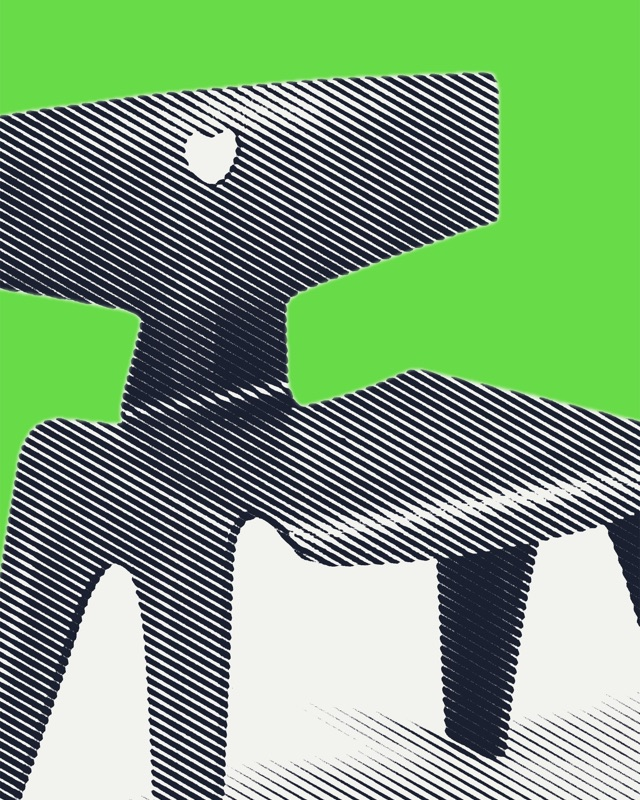
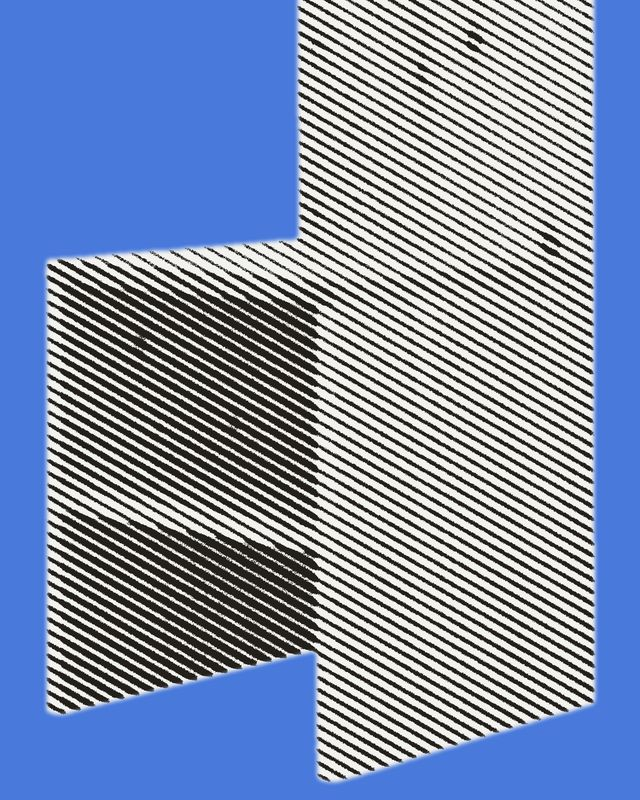
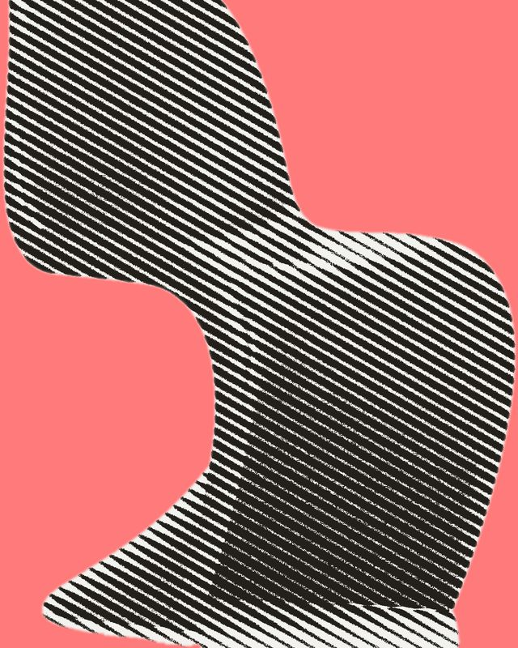

Design matters.
Advancing the understanding of significant artifacts from the fields of furniture, industrial design and architecture.
A new cultural project advancing design in Brooklyn, New York.



Advancing the understanding of significant artifacts from the fields of furniture, industrial design and architecture.
A new cultural project advancing design in Brooklyn, New York.